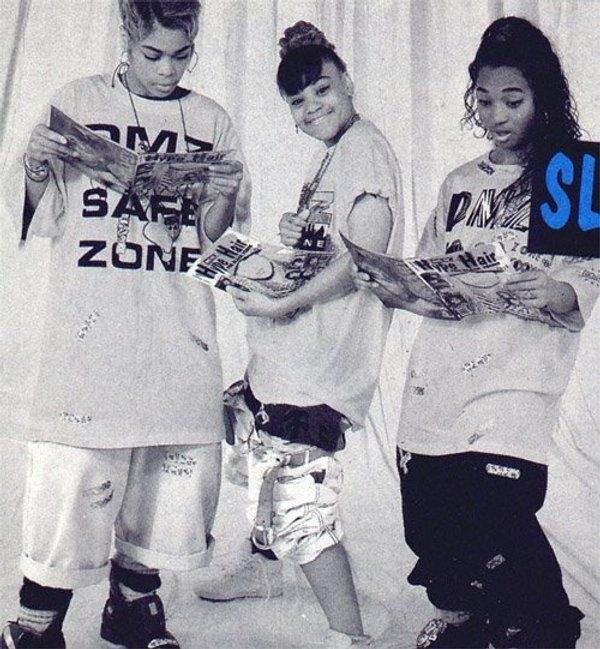

Welcome to my Assignment 4 webpage! This page celebrates my favorite 90s group TLC while I practice building websites.
This paragraph is long on purpose so the text stretches across multiple lines. Using CSS justify makes both sides of the paragraph line up evenly which gives it a clean and professional look on the webpage.

Address: Campus Box 5750
Phone: (309) 438-2875
Director: Colby Jennings
Degrees Offered: B.A., B.S.
Major in Creative Technologies
The interdisciplinary Creative Technologies major emphasizes design and practice in the integration of digital technologies and the fine arts. In addition to foundational study across the fine arts, the major provides training and experiences across a range of creative and technical fields including video, sound, electronic music, music production, gaming, motion graphics, interactivity, AR/VR, UI/UX, mobile, web, and computer programming concepts.
Here is a highlighted span inside a paragraph.
Welcome to Illinois State University!